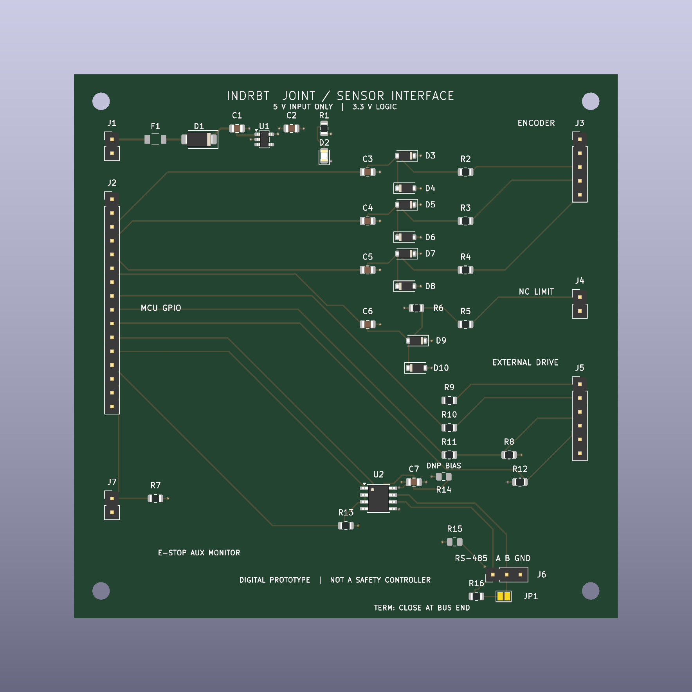

INDRBT / Reading room
Electronics tour · INDRBT joint and sensor interface
Adapted for browser reading from the project’s illustrated documentation. Numeric results and engineering scope are unchanged. Reproduction notes are optional; the robot and board viewers run from the navigation above.
On this page
Inspect the board and components online — no CAD application or GitHub access required.
Project home · Schematic PDF · Component guide · Detailed design
This board connects an external 3.3 V controller to a joint encoder, limit contact, separate motor drive and RS-485 bus. It gives the robot project a concrete electrical interface with a schematic, routed PCB and checked manufacturing exports. One interface is designed; repeating it across the arm and gripper is the system architecture.

100 × 100 mm · four copper layers · 44 schematic components · 48 PCB footprints, including four mounting holes. The 41-body placement file omits the two optional bias resistors, bare copper solder jumper and mounting holes. F1's custom copper lands are present; a fitted fuse body model is not supplied.
Follow the signal path
| Block | Find it on the board | What it does |
|---|---|---|
| 5 V input and protection | J1 → F1 → D1, upper left | A resettable fuse and reverse-polarity diode feed the protected logic supply. Input is regulated 5 V. |
| 3.3 V supply | U1, C1, C2, beside the input; R1/D2 indicator | The AP2112 regulator supplies the logic rail. The shared controller, encoder and interface load budget is 150 mA, a design assumption. |
| Controller connection | J2, left edge | The external controller receives feedback and supplies step, direction, enable and communication signals. No microcontroller or embedded firmware is implemented on this PCB. |
| Encoder and travel feedback | J3, R2–R4, C3–C5, D3–D8; J4, R5/R6, C6, D9/D10 | Three encoder channels have RC filters and rail clamps. The normally closed limit contact reads low when closed and high when opened or disconnected. |
| External drive | J5, R8–R12, right edge | Series resistors carry 3.3 V STEP/DIR/ENABLE commands; a pull-down defaults enable to off. The separate drive handles motor power. |
| RS-485 communication | U2, C7, R13, J6, lower right | The LTC2850 translates controller UART signals to the A/B bus. R14/R15 are optional, unpopulated bias parts; R16/JP1 provide selectable endpoint termination. |
| E-stop auxiliary state | J7/R7, lower left | Reports contact state to the controller. Actuator torque interruption belongs to independent external safety hardware. |

The references above match the same parts in the schematic, BOM and component guide. For example, locate U2 on this image, find U2 in the schematic and read its value and footprint in the BOM. The system architecture diagram shows how the interface fits between motion software, feedback and external drives.

Inspect, download or edit
Public KiCad and PCB STEP downloadsSource file provide the editable project/library context and mechanical board geometry. The native-file guide explains opening them. The published GitHub Pages showcase includes the browser viewers and download controls.
PDFs and images provide immediate viewing; GitHub renders the BOM CSV as a table. Native KiCad links lead to engineering source files: download the complete repository to open and edit them in KiCad.
| I want to… | Open this |
|---|---|
| Read the circuit | Schematic PDF or zoomable schematic SVG |
| Inspect copper and board layers | Six-page layer PDF, assembly SVG, ground plane or 3.3 V plane |
| Open the native project | joint_interface.kicad_proSource file in KiCad 10 |
| Edit the schematic / layout | joint_interface.kicad_schSource file / joint_interface.kicad_pcbSource file |
| Review components and population | BOM CSV, component guide and placement CSV |
| Examine manufacturing outputs | Fabrication ZIPSource file: ten Gerber layers, plated/nonplated drills, maps, positions, IPC-D-356 and BOM |
| Check the evidence | Independent electronics review, native ERC, native DRC and source/export verification |


For optional offline editing, choose Code → Download ZIP from the repository home and extract it, or clone the repository. Keep the complete electronics folder together, including fp-lib-table, sym-lib-table and INDRBT_Interface.prettySource file. The local F1 footprint uses a relative project path, so downloading only the PCB loses its editable library context. Install KiCad 10 with its standard symbol and footprint libraries, then open the .kicad_pro file. The repository's Windows OPEN_PCB_LAYOUT.cmdSource file also opens the board after download.
What has been checked
The saved native evidence records zero enabled-rule ERC/DRC findings, zero unconnected items and zero schematic-parity issues. Independent checks cover 118 connected pin assignments, 22 circuit topology statements, the BOM, exported files and their source hashes. These results describe the saved digital design. The design chapter explains factory-disabled rule scope, assumptions, calculations and how to rerun the checks.
The controller and drive must match the documented 3.3 V interfaces. Thermal behaviour, cable noise, component purchasing choices and physical safety remain build-stage work; no hardware performance is claimed.